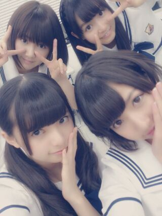
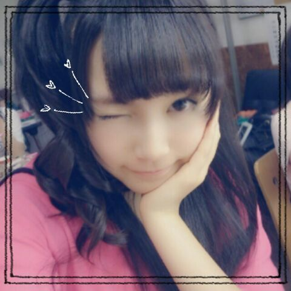
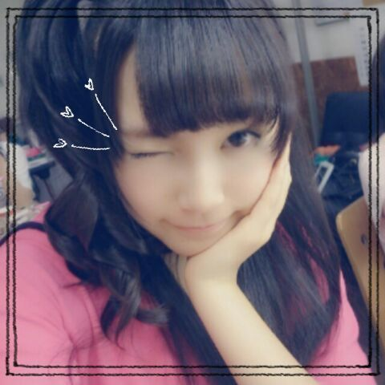

| 2013/09 13 Fri | ひめたん(*>ω<*)そ の341 |

ぱっつん らりん (永島聖羅ちゃん)
かわゆすううううっ
昨日は朝日新聞の授業、
今日は氣志團万博のリハ！
朝日新聞さんの授業は
いつも うんうんってためになるので
なんか賢くなってく気がして楽しいのー( ^ω^ )
また授業の様子が
朝日新聞さんのサイトとかにあがると思うから
みなさんも一緒に考えてみましょねっ◎
明日は氣志團万博。
もうねーめっちゃ楽しみ！フェス！野外！
ステージおっきいから
元気ーに踊ってきますねー♪
行くよって方は一緒に楽しいステージにしようね
よろしくお願いしますっ( ^ω^ )

盛大に照れながらウインクしてみたけど
上手に撮れぬ(´・ω・｀)
あのね！ひめたんはね
ウインクできる人間なんだよー
パチって音がするんだよー？
ただね伝わらないかもしれぬ。ぱち！
あ！ひまわりの種
みんなのおうちに配りにいくねー♪
ご協力ありがとーう＼( ^O^ )／食べて食べて〜
ぱっつん らりん (永島聖羅ちゃん)
かわゆすううううっ
昨日は朝日新聞の授業、
今日は氣志團万博のリハ！
朝日新聞さんの授業は
いつも うんうんってためになるので
なんか賢くなってく気がして楽しいのー( ^ω^ )
また授業の様子が
朝日新聞さんのサイトとかにあがると思うから
みなさんも一緒に考えてみましょねっ◎
明日は氣志團万博。
もうねーめっちゃ楽しみ！フェス！野外！
ステージおっきいから
元気ーに踊ってきますねー♪
行くよって方は一緒に楽しいステージにしようね
よろしくお願いしますっ( ^ω^ )

盛大に照れながらウインクしてみたけど
上手に撮れぬ(´・ω・｀)
あのね！ひめたんはね
ウインクできる人間なんだよー
パチって音がするんだよー？
ただね伝わらないかもしれぬ。ぱち！
あ！ひまわりの種
みんなのおうちに配りにいくねー♪
ご協力ありがとーう＼( ^O^ )／食べて食べて〜

 今度体育祭で大縄があるんだけどね、
今度体育祭で大縄があるんだけどね、
大縄でひっかからない方法とかある？
大縄かあーあたしも去年やったよー( ^O^ )
やっぱりみんなで声だすの大事だと思うよー
「１！はい！２！はい！３！はい！」の
「はい！」はねー結構大事。
あっちなみに数字の時に飛んでね♪ふぁいとー！
ひめたんはこの真夏の全国ツアーで
輝いてたなーってひとはだれですかー？
みーんなキラキラしてた
メンバーも、ファンのみなさんも！
きらきら乃木坂ファミリーさん☆
 ひめたんはどの種類の犬が好き？
ひめたんはどの種類の犬が好き？
ヨーキー！
もーまじでいつか
我が家に迎え入れたいです∪^ω^∪
そしたらジェリーちゃんってお名前にします
ちなみに名付け親はまま。
何かを手に持って見てて
それ終わったらなおしといてなっと言われました
それを聞いてひめたんはどうしますか？
元あった場所に戻しておくとか？
うー正解なになにー？＊
待ち時間にどんなことして過ごしてるの？
みんなでお話したり、ブログ読んだり書いたり
たーまーに学校の課題とかもするかなー∩^ω^∩
サンライズをメロンパンって言うと
「フフーン、こやつ広島県民じゃないな」
ってバレちゃう？
それはないと思うよー
広島でもサンライズ知らない人
たくさんいると思うよ！
それからこれはコメント読んでて知ったけど
兵庫の人もサンライズって言うらしい！
最近ひめたんのことが気になります。
もう51才ですが年齢制限はありますか？
一切ありませーん＼( ^O^ )／
いまのところひめたんのおじいちゃんが
最高齢ひめきゅんさんだよ♪
学校の昼休みを「昼休憩」と言うのは
広島と和歌山だけ、らしいよ。。。
ねー！まじでびっくりしたよそれ！
「明日の昼休は晴れたらグランドで遊びたいなー」
とか言わないの？
広島と和歌山......不思議だね。
例文下手くそかって？ごめんなさいごめんなさい
人気がでても今までのファンの近くにいる
ひめたんでいてくれますか？
何を言いますか(´;ω;｀)もちろんよー
だからみなさーんこそ、
こそーっとさくーっと離れていったりしたら
ひめたん寂しいんだからねっ
今度、さくらいれいかについて
握手会でお話してもいいかな？
お待ちしております(｀・ω・´)楽しみす
りょうすけ君って呼ぶとしたら
挙げ調子で呼びますか?それとも下げ調子ですか？
下げ調子かなー？
りょうすけくーん！あれ上げ調子かも♪
ひめたん学校たのしい？？
楽しい！とっても！
やっぱり乃木坂とはまた違った環境で
どっちも大切です◎
学校が始まった。。。だらだらが抜けない!!!!!!
ひめたん、力を貸して！笑笑
そんなあなたに
ひめたーんびーむ(<・ω・>)
...どうかな元気になったかな。
よーし明日も頑張ろー！
ひめたんはあの中だとどれが1番好き?(方言告白)
なーちゃんの
「告白の二度聞きは禁止やで☆」は
やばたんでしたねーかわいかった！
あとは地元らぶで申し訳ないけど
やっぱ広島やな///
僕も明日誕生日なんです18歳なんです♪
ぜひお祝いのお言葉を（笑）
えいてぃーんおたおめめ！
ひめたんのいっこ先輩ですねー
素敵ないちねんになりますように。
これからも仲良くしてね＼(^O^ )／
ちょっと るんるん (斉藤ちはるちゃん)！
あの写めはだめだって......
いや、前回のブログ見たときにさー
あれーこれひめたんじゃん？って
ちょっと思ったけどさー
でもでもでもあの写めは...うぐぐ......
(＊´・ω・＊)
コメント(274)
2013/09/13 22:54